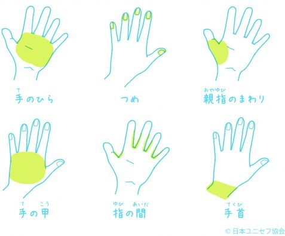
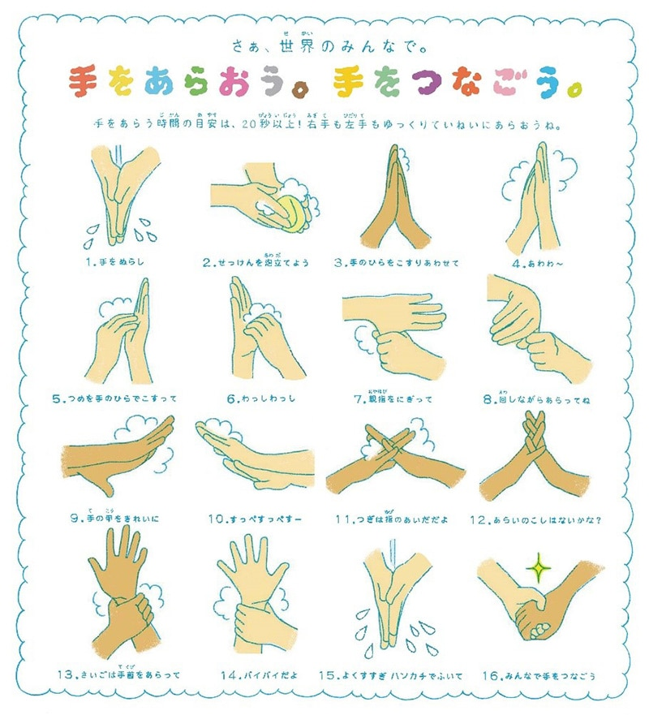

私達に今できること
新型コロナウイルス感染症に罹患された皆様、及び関係者の皆様に、謹んでお見舞い申し上げます。
新型コロナウイルス感染拡大による世界が直面する新たな局面は、私たちのこれまでの生き方、働き方、お客様や社会との繋がり方、家族との繋がり方など、今まで「当たり前」であったもの全てを根本から見直すことを迫るものです。
一個人としてできることは何かを考えたい、そしてできることから実行に移したいと考えています。
寄付
ユニセフ
新型コロナウイルス感染症（COVID-19）は、世界中で408万人以上の感染が確認され、28万人以上が命を落としています（5月12日時点：WHO状況レポートより）。感染は急速に拡大しており、紛争や自然災害、気候変動によってすでに人道危機に直面していた国々にも広がっています。
新型コロナウイルス緊急募金公益財団法人プラン・インターナショナル・ジャパン
医療体制が脆弱な地域での感染拡大を防ぐために。
皆さまからのご支援をどうぞよろしくお願いいたします。
日本赤十字社
救うことを、つづける。
国内外で苦しんでいる人を救うため、
日本赤十字社が行なう人道支援活動の基盤となる大変重要なご寄付です。
継続的なご寄付が、「いざ」というときの迅速で最適な支援を可能にします。
ご支援は、毎年・毎月・今回のみからお選びいただけます。
クレジットカード以外でのご支援は、下部の「上記以外の主なご協力方法」をご覧ください。
寄付する正しい情報を得ましょう
新型コロナウイルス感染症（COVID-19）の感染経路や症状、予防方法等に関する正しい情報を、確かな情報源から得てください。
口コミやインターネット上で広がる情報源不明の偽情報に注意しましょう。
●●の知り合いから聞きました！などといった情報源不明の情報を拡散しないことも、重要なコロナ対策です。
新型コロナウイルスに関するQ&A（一般の方向け）| 厚生労働省予防のためにできること
石けんをつかった正しい手洗いは、コロナウイルスやインフルエンザなど、感染症から自分自身を守るだけでなく、周囲の人々に感染を広げないためにできる、最も安価で効果的な手段のひとつです。
手洗いのタイミング
- 料理や食事をする前
- 咳やくしゃみ、鼻をかんだ後
- トイレの後
- 登校/出社した時、外から戻ってきた時、帰宅した時
- 動物や昆虫にふれた後
正しい手洗いを身につけよう
手洗いするとき、特に意識して洗うのは下記6カ所です。
 大切なのは、ウイルスや汚れをしっかり落とすこと。そのためには、せっけんやハンドソープを使って泡をつくり、「20秒以上」かけて、ゆっくり、ていねいに洗うことがポイントです。
洗った後は、泡を流水で洗い流し、きれいなタオルでふきましょう。